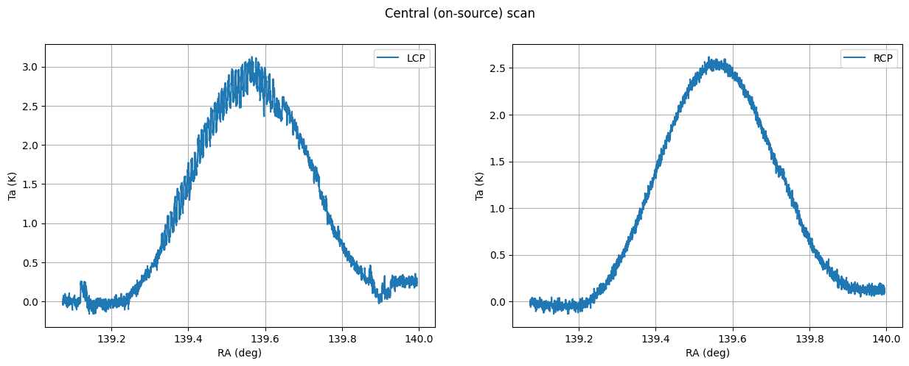
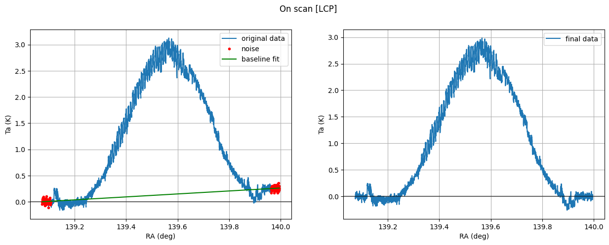
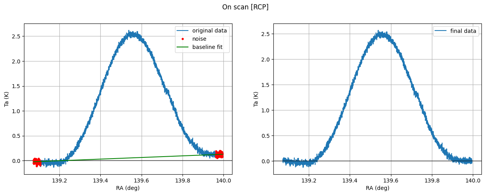
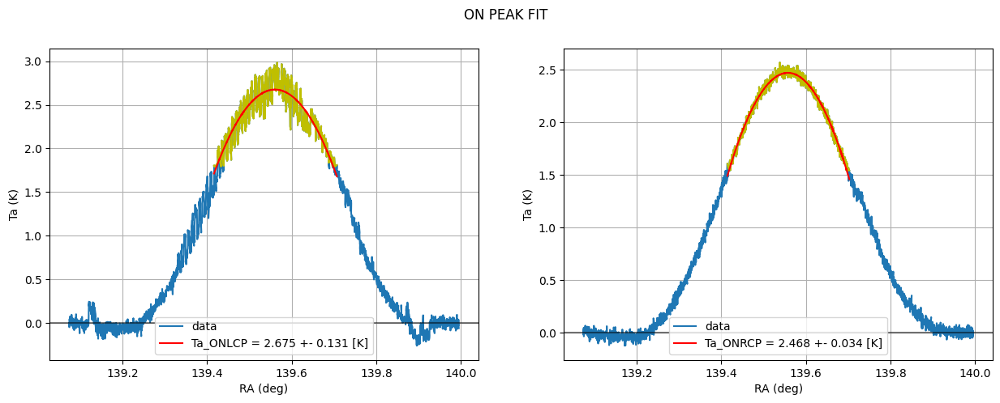
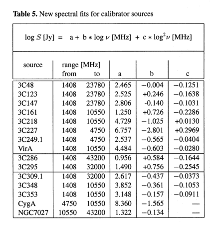

Radio flux density calibration of Hydra A @ 2 GHz#
Please note:#
The data you will be processing in this and other tutorials is located in the “data” folder. In there you will find fits files for your calibrator Hydra A and your target source J1427-4206 at 2 GHz, 5 GHz, 8 GHz and 12 GHz frequencies. For this exercize we will be working on 2GHz data for our calibration source.
All the files you will need for the tutorial can be found at this Github repository. You need to download the file and work from that directory. i.e. “cd into that directory”
Listed below are the steps we are going to follow to calibrate our source and estimate the flux density
Task list:#
Locate and open the observation file
Examine the fits file
Extract the drift scan data
Measure the antenna temperature
4.1 Convert counts to units of Kelvin
4.2 Fit a baseline to remove systemic contributions
4.3 Fit beam to get antenna temperature
Calculate the Point source sensitivity
1. Locate and open the observation file#
back to top
Select an observation to work on and open the fits file
The Python standard library has a pyfits package we use for reading and writing FITS files and manipulating their contents. Fits files store information about a source observation in what it calls header data units (HDUs). We are going to load the package in order to begin processing our preferred file. You can read up on all the other interesting file manipulation methods by clicking on the link above.
[1]:
import astropy.io.fits as pyfits
# Get the path name of the file you want to process
fitsfile = 'data/HydraA/2GHz/2013d125_15h23m40s_Cont_mike_HYDRA_A.fits'
hdulist = pyfits.open(fitsfile)
2. Examine the fits file#
back to top
It is always a good idea to familiarize yourself with the file contents by viewing the different types of information inside your file. To get an overview of the contents we use the info() method
[2]:
hdulist.info()
Filename: data/HydraA/2GHz/2013d125_15h23m40s_Cont_mike_HYDRA_A.fits
No. Name Ver Type Cards Dimensions Format
0 PRIMARY 1 PrimaryHDU 41 ()
1 13.0S 1 BinTableHDU 60 1R x 13C [1D, 1D, 1D, 8A, 1D, 8A, 1D, 28A, 1D, 1D, 29A, 1D, 1D]
2 Scan_0_ZC_CAL 1 BinTableHDU 107 128R x 23C [1D, 1D, 1D, 1D, 1D, 1D, 1D, 1D, 1D, 1D, 1D, 1D, 1D, 1D, 1D, 1D, 1D, 1D, 1D, 1D, 1D, 1D, 1D]
3 Scan_1_ZC 1 BinTableHDU 95 2756R x 23C [1D, 1D, 1D, 1D, 1D, 1D, 1D, 1D, 1D, 1D, 1D, 1D, 1D, 1D, 1D, 1D, 1D, 1D, 1D, 1D, 1D, 1D, 1D]
4 Chart 1 BinTableHDU 40 3829R x 3C [1D, 1D, 1D]
The info() method gives us a list of all the HDUs in this file.
The first header data unit (HDU) contains information on the observation.
The second one has information on the 2.5 cm (i.e. 12 GHz) feed system. This data is not necessarily up to date, so we generally disregard it.
The third unit has the noise diode firing, used to convert from raw counts to Kelvins.
The next three binary tables are the drift scans themselves, starting at the north offset position.
The last HDU contains more information about the observation.
To view the content inside an HDU we use indexes. For example, to view the PRIMARY HDU, we use index 0.
[3]:
hdulist[0].header
# You can play around with changing the indeces to see what
# other information is stored in the other HDUs
[3]:
SIMPLE = T
BITPIX = 8
NAXIS = 0
EXTEND = T
DATE = '2013-05-05T15:23:40' / file creation date (YYYY-MM-DDThh:mm:ss UT)
COMMENT information about the object, from scheduler task
OBJECT = 'HYDRA A ' / Name of object
LONGITUD= 139.52375 / Longitude of object
LATITUDE= -12.0955555555556 / Latitude of object
COORDSYS= 'EQUATORIAL' / Input coordinate system
EQUINOX = 2000. / Input coordinate equinox
RADECSYS= 'ICRS ' / Input reference frame
COMMENT information about the scan, from scheduler task
OBSERVER= 'Mike ' / Principal Investigator
OBSLOCAL= 'mike ' / On-site observer
PROJNAME= '2280 GHz continuum calibration' / Short name for the project
PROPOSAL= '2011.030' / Observing proposal ID
COMMENT information about the antenna
TELESCOP= 'HartRAO 26m Antenna' / Telescope name
UPGRADE = 'Surface upgrade completed !!' / Antenna surface status
FOCUS = 4.609375 / Sub-reflector focus
TILT = 0. / Sub-reflector tilt
TAMBIENT= 287.970518951416 / [K] Ambient temperature
PRESSURE= 870.5 / [mbar] Atmospheric pressure
HUMIDITY= 31.1338476867676 / [%] Humidity
WINDSPD = 2.392578125 / [m/s] Wind Speed
SIMULATE= 0 / Simulation ?
SCANTYPE= 'Drift ' / Scan type
INSTRUME= 'Total Power' / Radiometer type
INSTFLAG= 'None ' / Radiometer flags
STEPSEQ = 'ZCCAL ' / Stepping sequence
SCANDIST= 0.918322783922742 / Scan length (deg)
SCANANGL= 0. / Scan angle (deg)
SCANTIME= 219.795687494276 / Scan time (s)
STARTX = 0. / Start X position (deg)
STARTY = 0. / Start Y position (deg)
STOPX = 0. / Stop X position (deg)
STOPY = 0. / Stop Y position (deg)
SCANS = 1 / No of scans per position
SCANDIR = 'Both ' / Scanning direction
POINTING= 1 / Pointing corrections applied
3. Extract the drift scan data#
back to top
[4]:
drift = hdulist[3] #ON
Lets view the drift1 HDU to see the file contents
[5]:
drift.header
[5]:
XTENSION= 'BINTABLE' / binary table extension
BITPIX = 8 / 8-bit bytes
NAXIS = 2 / 2-dimensional binary table
NAXIS1 = 184 / width of table in bytes
NAXIS2 = 2756 / number of rows in table
PCOUNT = 0 / size of special data area
GCOUNT = 1 / one data group (required keyword)
TFIELDS = 23 / number of fields in each row
EXTNAME = 'Scan_1_ZC' / name of this binary table extension
FRONTEND= '13.0S ' / Frontend ID
CENTFREQ= 2280. / [MHz] Backend centre frequency
BANDWDTH= 16. / [MHz] Bandwidth of backend
SCANTYPE= 'Drift ' / Scan type
INSTRUME= 'Total Power' / Radiometer type
INSTFLAG= 'None ' / Radiometer flags
STEPSEQ = 'ZC ' / Stepping sequence
SCANDIST= 0.918322783922742 / Scan length (deg)
SCANANGL= 0. / Scan angle (deg)
SCANTIME= 220.48 / Scan time (s)
STARTX = -0.459161391961371 / Start X position (deg)
STARTY = 0. / Start Y position (deg)
STOPX = 0.459161391961371 / Stop X position (deg)
STOPY = 0. / Stop Y position (deg)
SCAN = 1 / Index no of scan
HZZERO1 = 126597.861366769 / [Hz] Counter zero offset
HZZERO2 = 121761.204481793 / [Hz] Counter zero offset
TTYPE1 = 'MJD ' / label for field
TFORM1 = '1D ' / format of field
TUNIT1 = 'days '
TTYPE2 = 'Count1 ' / label for field
TFORM2 = '1D ' / format of field
TUNIT2 = 'Hz '
TTYPE3 = 'Count2 ' / label for field
TFORM3 = '1D ' / format of field
TUNIT3 = 'Hz '
TTYPE4 = 'Hour_Angle' / label for field
TFORM4 = '1D ' / format of field
TUNIT4 = 'deg '
TTYPE5 = 'Declination' / label for field
TFORM5 = '1D ' / format of field
TUNIT5 = 'deg '
TTYPE6 = 'Azimuth ' / label for field
TFORM6 = '1D ' / format of field
TUNIT6 = 'deg '
TTYPE7 = 'Elevation' / label for field
TFORM7 = '1D ' / format of field
TUNIT7 = 'deg '
TTYPE8 = 'RA_Apparent' / label for field
TFORM8 = '1D ' / format of field
TUNIT8 = 'deg '
TTYPE9 = 'Dec_Apparent' / label for field
TFORM9 = '1D ' / format of field
TUNIT9 = 'deg '
TTYPE10 = 'RA_Mean ' / label for field
TFORM10 = '1D ' / format of field
TUNIT10 = 'deg '
TTYPE11 = 'Dec_Mean' / label for field
TFORM11 = '1D ' / format of field
TUNIT11 = 'deg '
TTYPE12 = 'RA_B1950' / label for field
TFORM12 = '1D ' / format of field
TUNIT12 = 'deg '
TTYPE13 = 'Dec_B1950' / label for field
TFORM13 = '1D ' / format of field
TUNIT13 = 'deg '
TTYPE14 = 'RA_J2000' / label for field
TFORM14 = '1D ' / format of field
TUNIT14 = 'deg '
TTYPE15 = 'Dec_J2000' / label for field
TFORM15 = '1D ' / format of field
TUNIT15 = 'deg '
TTYPE16 = 'Galactic_Long' / label for field
TFORM16 = '1D ' / format of field
TUNIT16 = 'deg '
TTYPE17 = 'Galactic_Lat' / label for field
TFORM17 = '1D ' / format of field
TUNIT17 = 'deg '
TTYPE18 = 'Ecliptic_Long' / label for field
TFORM18 = '1D ' / format of field
TUNIT18 = 'deg '
TTYPE19 = 'Ecliptic_Lat' / label for field
TFORM19 = '1D ' / format of field
TUNIT19 = 'deg '
TTYPE20 = 'User_Long' / label for field
TFORM20 = '1D ' / format of field
TUNIT20 = 'deg '
TTYPE21 = 'User_Lat' / label for field
TFORM21 = '1D ' / format of field
TUNIT21 = 'deg '
TTYPE22 = 'HA_Error' / label for field
TFORM22 = '1D ' / format of field
TUNIT22 = 'deg '
TTYPE23 = 'Dec_Error' / label for field
TFORM23 = '1D ' / format of field
TUNIT23 = 'deg '
Most of the fields are actually just the position in different formats. We are interested in the output signal ‘Count1’ and ‘Count2’.
4. Measure the antenna temperature#
back to top
back to top
[6]:
#Import plotting libraries
import matplotlib.pyplot as plt
#display figures inline
%matplotlib inline
# Get the noise diode calibration HDU
noise_cal = hdulist[2]
# Construct an array for the x-axis in terms of right ascension
ra = drift.data['RA_J2000']
count_K1 = noise_cal.header['HZPERK1']
count_K2 = noise_cal.header['HZPERK2']
# Get source counts
on_scan_LCP_counts = drift.data['Count1']
on_scan_RCP_counts = drift.data['Count2']
# Convert counts to antenna temperature
on_scan_LCP = (drift.data['Count1']/count_K1) - ((drift.data['Count1'])[0]/count_K1)
on_scan_RCP = (drift.data['Count2']/count_K2) - ((drift.data['Count2'])[0]/count_K2)
# Plot the data
# ON
plt.figure(figsize=[15,5])
plt.suptitle('Central (on-source) scan')
ax = plt.subplot(121)
plt.grid()
plt.plot(ra, on_scan_LCP, label = 'LCP')
plt.xlabel('RA (deg)')
plt.ylabel('Ta (K)')
plt.legend()
lim = plt.axis('tight')
ax = plt.subplot(122)
plt.grid()
plt.plot(ra, on_scan_RCP, label = 'RCP')
plt.xlabel('RA (deg)')
plt.ylabel('Ta (K)')
plt.legend()
lim = plt.axis('tight')

back to top
We are only interested in the temperature contributed by the source, so we want to subract off the system temperature contribution. We see that the baseline level changes through during the scan.
What do we fit then? This is a fairly strong source, we can clealy see the antenna beam pattern. Looking carefully we can see a deflection point at the base of the beam. This is the first null of the beam. At these points we will not be receiving any power from the source.
Locate the section you want to use for your fit. We are going to write a few methods to help us process the location selection for our fit
[7]:
def getBasePts(x, y,len_scan,x1,x2,x3,x4):
'''
Get baseline points. Select points along the driftscan where you will fit
your baseline.
'''
xbleft = x[x1:x2]
ybleft = y[x1:x2]
xbright= x[len_scan-x3:len_scan-x4]
ybright= y[len_scan-x3:len_scan-x4]
left_base_pts = list(xbleft) + list(xbright)
right_base_pts = list(ybleft) + list(ybright)
return left_base_pts, right_base_pts
Fit the baseline and plot your data
[16]:
import numpy as np
def fitBasePts(x_base_pts,y_base_pts, x, y):
"""Fit the data to remove systematic contributions.
"""
base_fit_coeffs = np.polyfit(x_base_pts, y_base_pts, 1)
base_fit_line = np.polyval(base_fit_coeffs,x_base_pts)
data_fit = np.polyval(base_fit_coeffs, x)
data_fit = y - data_fit
res,rms = residual(y_base_pts,base_fit_line)
print ("Fit = %.2fx + %d, rms error = %.3f" %(base_fit_coeffs[0], base_fit_coeffs[1],rms))
return data_fit, base_fit_line
# Get the residual and rms to estimate the errors in the fit
def residual(model, data):
from sklearn.metrics import mean_squared_error
"""
Calculate the residual between the model and the data.
"""
res = np.array(model - data)
rms = np.sqrt(mean_squared_error(data,model))
return res, rms
def fitBaselineAndPlot(x,y,title,x1,x2,x3,x4,len_scan):
"""
Fit the baseline and plot your data
"""
xb,yb = getBasePts(x,y,len_scan,x1,x2,x3,x4)
# Fit the baseline points
fit, base_fit_line = fitBasePts(xb,yb, x, y)
# plot the data
plt.figure(figsize=[15,5])
plt.suptitle(title)
ax = plt.subplot(121)
plt.axhline(y=0, color='k', alpha= 0.5)
l1,= plt.plot(x,y, label = 'original data')
l2,= plt.plot(xb,yb,'r.', label = 'noise')
plt.plot(xb,base_fit_line, 'g', label = "baseline fit")
plt.xlabel('RA (deg)')
plt.ylabel('Ta (K)')
plt.legend()
plt.grid()
lim = plt.axis('tight')
ax = plt.subplot(122)
l1,= plt.plot(x,fit, label = 'final data')
plt.xlabel('RA (deg)')
plt.ylabel('Ta (K)')
plt.axhline(y=0, color='k', alpha= 0.5)
plt.legend()
plt.grid()
lim = plt.axis('tight')
return fit
# Get the length of the scans
len_scan = len(ra)
# Set the baseline points, default is 100 points on each side
# You can change the x1-x4 values to adjust the location of
# your baseline fit.
# Set your baseline fit data points. YOU CAN MODIFY THESE VALUES
x1 = 0
x2 = 100
x3 = 100
x4 = 1
print ("Y = mx + c", len(ra))
# Fit and plot
onlcp = fitBaselineAndPlot(ra, on_scan_LCP, 'On scan [LCP]',x1,x2,x3,x4,len_scan)
onrcp = fitBaselineAndPlot(ra, on_scan_RCP, 'On scan [RCP]',x1,x2,x3,x4,len_scan)
Y = mx + c 2756
Fit = 0.28x + -39, rms error = 0.039
Fit = 0.16x + -22, rms error = 0.031


back to top
We are now going to fit the top of the beam to fit the antenna temperature. We will use a 2nd order polynomial fit at the top of the peak.
[17]:
# Get location of peak
def getPeakPts(drift, percentage):
"""Get locations of scan peak where we are going to fit
We will be fitting the top 40% of our scan.
"""
peak_frac = float((100.0 - percentage)/100.0)
peak_max = max(drift)
peak_pts = np.where(drift > peak_frac * peak_max)[0]
return peak_pts
# Fit the peak
def fitPeak(peak_pts, x, y):
"""Fit the peak and estimate errors.
"""
peakfitcoeffs = np.polyfit(x[peak_pts], y[peak_pts], 2)
#print "Fit parameters: ", peakfitcoeffs
peakfitline = np.polyval(peakfitcoeffs,x[peak_pts])
res, rms = residual(peakfitline, y[peak_pts])
return peakfitline,rms, x[peak_pts], y[peak_pts]
# Get peak points
# YOU CAN MODIFY THIS VALUE
# Choose the peak percentage you want to fit
peak_percentage = 40 # Change the percentage of the peak data you want to fit..
# Get peak points
peak_pts_onlcp = getPeakPts(onlcp, peak_percentage)
peak_pts_onrcp = getPeakPts(onrcp, peak_percentage)
# Fit the peaks
fitponl, onlrms, xpolcp, ypolcp = fitPeak(peak_pts_onlcp, ra, onlcp)
fitponr, onrrms, xporcp, yporcp = fitPeak(peak_pts_onrcp, ra, onrcp)
# Print out the ANTENNA TEMPERATURES
print ('Ta_ONLCP = %.3f +- %.3f [K]' %(max(fitponl), onlrms))
print ('Ta_ONRCP = %.3f +- %.3f [K]' %(max(fitponr), onrrms))
Ta_ONLCP = 2.675 +- 0.131 [K]
Ta_ONRCP = 2.468 +- 0.034 [K]
Plot the fits
[18]:
def plotFit(ra, drift1, title, peak_pts1,fit1,drift2, peak_pts2,fit2, lab1,lab2,xp1,yp1,xp2,yp2):
# plot the data
plt.figure(figsize=[15,5])
plt.suptitle(title)
ax = plt.subplot(121)
l1,= plt.plot(ra,drift1, label = 'data')
plt.plot(xp1,yp1,'y')
l3,= plt.plot(ra[peak_pts1],fit1,'r', label=lab1)
plt.xlabel('RA (deg)')
plt.ylabel('Ta (K)')
plt.legend()
plt.axhline(y=0, color='k', alpha= 0.5)
plt.grid()
lim = plt.axis('tight')
ax = plt.subplot(122)
l1,= plt.plot(ra,drift2, label = 'data')
plt.plot(xp2,yp2,'y')
l3,= plt.plot(ra[peak_pts2],fit2, 'r',label = lab2)
plt.xlabel('RA (deg)')
plt.ylabel('Ta (K)')
plt.axhline(y=0, color='k', alpha= 0.5)
plt.legend()
plt.grid()
lim = plt.axis('tight')
plotFit(ra,onlcp,'ON PEAK FIT',peak_pts_onlcp,fitponl, onrcp, peak_pts_onrcp,fitponr,'Ta_ONLCP = %.3f +- %.3f [K]' %(max(fitponl), onlrms), 'Ta_ONRCP = %.3f +- %.3f [K]' %(max(fitponr), onrrms), xpolcp, ypolcp, xporcp, yporcp)

5. Calculate the Point source sensitivity#
back to top
We need a conversion factor for our target source flux. We need to calculate the PSS of the calibrator source
For single dish observations, the flux standards defined by Ott et al. (1994) (http://adsabs.harvard.edu/full/1994A&A…284..331O) are still in use (http://adsabs.harvard.edu/abs/1977A%26A….61…99B is an earlier flux scale). At HartRAO we generally observe three flux calibrators: 3C123, Virgo A and Hydra A. Most of the sources, with the exception of 3C286 and 3C295 (both too faint to be of much use to us) have shown variability on the time-scale of a decade. So it is generally a good idea to have multiple calibrators. Three is the minimum number that would enable you to determine which source has undergone intrinsic variation.
The spectra of the sources are characterised by a frequency dependent expression with three coefficients.
Table 5 of Ott et al. (1994) is shown below:

[19]:
def S_ott(a, b, c, nu):
#evaluate the Ott flux polynomial
return 10**(a + b * np.log10(nu) + c * np.log10(nu)**2)
[20]:
nu = drift.header['CENTFREQ']
HydA = S_ott(4.728, -1.025, 0.0130, nu) #3C218 in Ott table
print('Flux density of Hydra A at %.3f MHz is %.2f Jy'%(nu, HydA))
Flux density of Hydra A at 2280.000 MHz is 27.08 Jy
Note that this is the total flux of the source. Each polarisation of the reciever only picks up half of this flux.
Calculate the PSS#
[13]:
def calcpss(Ta, Taerr,flux):
"""
Calculate PSS
"""
pss = float(flux)/2.0/Ta #0.0
psserr = np.sqrt((Taerr/Ta)**2)*pss
return pss, psserr
[14]:
psslcp, errpsslcp = calcpss(max(fitponl), onlrms,HydA)
pssrcp, errpssrcp = calcpss(max(fitponr), onrrms,HydA)
print('Point source sensitivity of LCP channel is %.3f +- %.3f Jy/K'%(psslcp, errpsslcp))
print('Point source sensitivity of RCP channel is %.3f +- %.3f Jy/K'%(pssrcp, errpssrcp))
Point source sensitivity of LCP channel is 4.255 +- 0.170 Jy/K
Point source sensitivity of RCP channel is 4.293 +- 0.091 Jy/K
We have successfuly calculated the PSS of the calibrator Hydra A @ 2GHz, we can go on to estimate the flux density of our variable source.
Link to source J1427-4206 notebook
[ ]: